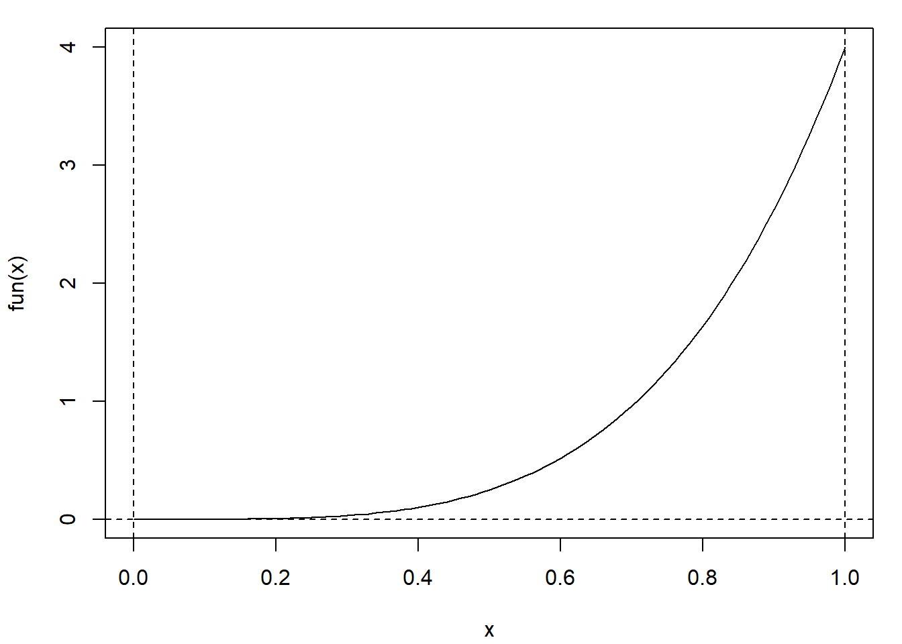

B.1 Integración numérica unidimensional
Supongamos que nos interesa aproximar una integral de la forma: \[I = \int_a^b h(x) dx.\].
Consideraremos como ejemplo: \[\int_0^1 4x^4 dx = \frac{4}{5}\].
fun <- function(x) return(4 * x^4)
curve(fun, 0, 1)
abline(h = 0, lty = 2)
abline(v = c(0, 1), lty = 2)
B.1.1 Método del trapezoide
La regla de los trapecios es una forma de aproximar la integral utilizando \(n\) trapecios. Si se consideran \(n\) subintervalos en \([a,b]\) de longitud \(h= \frac{b-a}{n}\) (i.e. \(n + 1\) puntos regularmente espaciados cubriendo el dominio), y se aproxima linealmente la función en cada subintervalo, se obtiene que: \[\int_a^b f(x)\, dx \approx \frac{h}{2} [f(a)+2f(a+h)+2f(a+2h)+...+f(b)]\]
trapezoid.vec <- function(f.vec, h = 0.01) {
# Integración numérica unidimensional entre a y b
# utilizando el método del trapezoide
# (se aproxima f linealmente en cada intervalo)
n <- length(f.vec)
return(h*(f.vec[1]/2 + sum(f.vec[2:(n-1)]) + f.vec[n]/2))
}
trapezoid <- function(fun, a = 0, b = 1, n = 100) {
# Integración numérica de fun (función unidimensional) entre a y b
# utilizando el método del trapezoide con n subdivisiones
# (se aproxima f linealmente en cada intervalo)
# Se asume a < b y n entero positivo
h <- (b-a)/n
x.vec <- seq(a, b, by = h)
f.vec <- sapply(x.vec, fun)
return(trapezoid.vec(f.vec, h))
}
trapezoid(fun, 0, 1, 20)## [1] 0.80333El error en esta aproximación se corresponde con: \[ \frac{(b-a)^3}{12n^2}\,f''(\xi), \] para algún \(a\leq \xi \leq b\) (dependiendo del signo de la segunda derivada, i.e. de si la función es cóncava o convexa, el error será negativo ó positivo). El error máximo absoluto es \(\frac{(b-a)^3}{12n^2}\max_{a\leq \xi \leq b}\left|f''(\xi)\right|\). En el caso general multidimensional sería \(O(n^{-\frac{2}{d}})\).
B.1.2 Regla de Simpson
Se divide el intervalo \(n\) subintervalos de longitud \(h= \frac{b-a}{n}\) (con \(n\) par), considerando \(n + 1\) puntos regularmente espaciados \(x_i = a + ih\), para \(i = 0, 1, ..., n\). Aproximando de forma cuadrática la función en cada subintervalo \([x_{j-1},x_{j+1}]\) (considerando 3 puntos), se obtiene que: \[ \int_a^b f(x) \, dx \approx \frac{h}{3} \bigg[ f(x_0)+2\sum_{j=1}^{(n/2)-1}f(x_{2j})+ 4\sum_{j=1}^{n/2}f(x_{2j-1})+f(x_n) \bigg],\]
simpson <- function(fun, a, b, n = 100) {
# Integración numérica de fnt entre a y b
# utilizando la regla de Simpson con n subdivisiones
# (se aproxima fun de forma cuadrática en cada par de intervalos)
# fnt es una función de una sola variable
# Se asume a < b y n entero positivo par
n <- max(c(2*(n %/% 2), 4))
h <- (b-a)/n
x.vec1 <- seq(a+h, b-h, by = 2*h)
x.vec2 <- seq(a+2*h, b-2*h, by = 2*h)
f.vec1 <- sapply(x.vec1, fun)
f.vec2 <- sapply(x.vec2, fun)
return(h/3*(fun(a) + fun(b) + 4*sum(f.vec1) + 2*sum(f.vec2)))
}
simpson(fun, 0, 1, 20)## [1] 0.8El máximo error (en el caso unidimensional) viene dado por la expresión: \[\frac{(b-a)^5}{180n^4}\,\max_{a\leq \xi \leq b}\left| f^{(4)}(\xi) \right|.\] En el caso general multidimensional sería \(O(n^{-\frac{4}{d}})\).
B.1.3 Cuadratura adaptativa
En lugar de evaluar la función en una rejilla regular (muestrear por igual el dominio), puede interesar ir añadiendo puntos sólo en los lugares donde se mejore la aproximación (en principio donde hay mayor área).
quadrature <- function(fun, a, b, tol=1e-8) {
# numerical integration using adaptive quadrature
simpson2 <- function(fun, a, b) {
# numerical integral using Simpson's rule
# assume a < b and n = 2
return((b-a)/6 * (fun(a) + 4*fun((a+b)/2) + fun(b)))
}
quadrature_internal <- function(S.old, fun, a, m, b, tol, level) {
level.max <- 100
if (level > level.max) {
cat ("recursion limit reached: singularity likely\n")
return (NULL)
}
S.left <- simpson2(fun, a, m)
S.right <- simpson2(fun, m, b)
S.new <- S.left + S.right
if (abs(S.new-S.old) > tol) {
S.left <- quadrature_internal(S.left, fun,
a, (a+m)/2, m, tol/2, level+1)
S.right <- quadrature_internal(S.right, fun,
m, (m+b)/2, b, tol/2, level+1)
S.new <- S.left + S.right
}
return(S.new)
}
level = 1
S.old <- (b-a) * (fun(a) + fun(b))/2
S.new <- quadrature_internal(S.old, fun,
a, (a+b)/2, b, tol, level+1)
return(S.new)
}
quadrature(fun, 0, 1)## [1] 0.8Fuente: r-blogger Guangchuang Yu
B.1.4 Comandos de R
La función integrate() implementa un método de cuadratura adaptativa que admite límites infinitos
integrate(fun, 0, 1) # Cuidado: fun debe ser vectorial...## 0.8 with absolute error < 8.9e-15Alternativamente, para dominios acotados, se puede emplear la función MASS::area() (suele dar muy buenos resultados, aunque los autores la desarrollaron inicialmente para fines ilustrativos):
require(MASS)
area(fun, 0, 1)## [1] 0.8